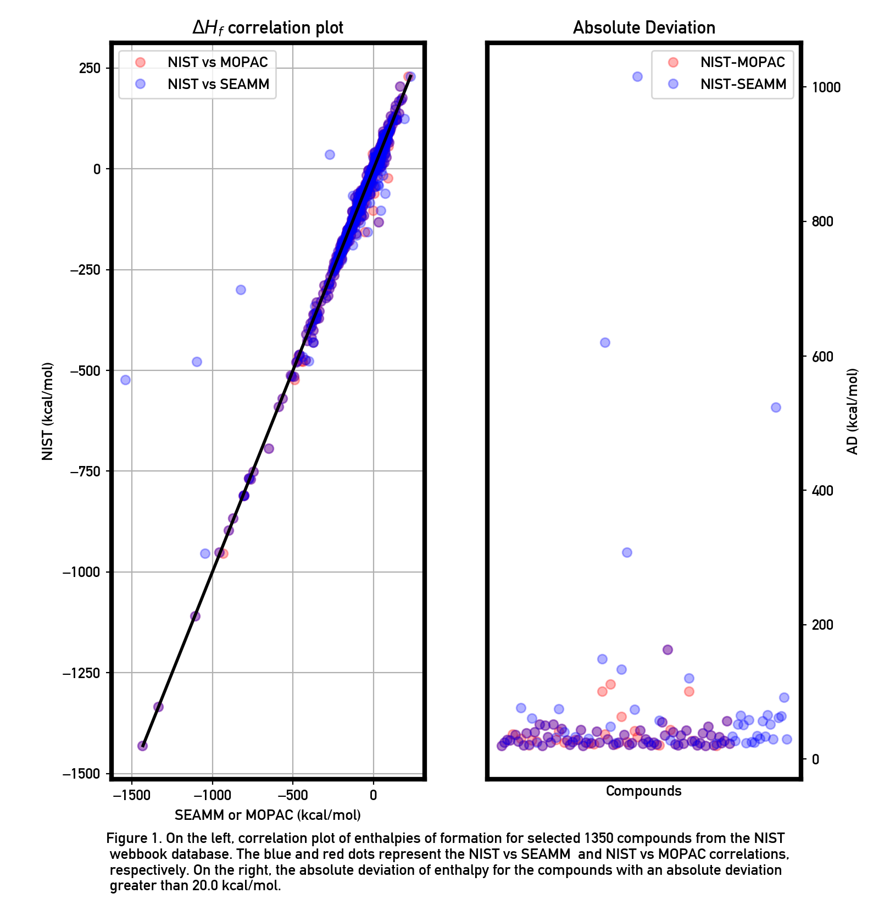

Use Case: MOPAC¶
MOPAC has an extensive suite for the validation of the semiempirical Hamiltonions, which have culminated with PM7. Dr. Stewart has graciously given us the set of datafiles underlying the calculations presented on the MOPAC website. The initial goals for the project were to use this large dataset to
Facilitate the creation and execution of a single or many semi-empirical quantum chemistry calculations using MOPAC.
Serve as a guiding application to develop the necessary functionality and infrastructure in SEAMM that execute any arbitrary plug-in.
Tasks:¶
At least 200 comparisons of heat of formation with NIST WebBook and MOPAC, with no more than 2% failures and 2% incorrect conformations starting from SMILES.
Accomplishments¶
Created a flowchart that runs ~8,300 MOPAC calculations of a wide variety of molecular systems that include elements such as lanthanides or transition metals (Note: inputs to the flowchart were MOPAC input files provided by Stewart).
Created the Read Structure plug-in for reading structure files.
Debugged GUI or other internal errors found in the SEAMM core, the read structure plug-in and the MOPAC plug-in.
Identified systematic bugs in MOPAC and OpenBabel. Both are related to systems such as Li+ or Na + with zero valence electrons.
Identify those keywords that “minimum common set” of keywords required to run any MOPAC job.
The MOPAC plug-in is a program that is designed to run a bulk of MOPAC calculations (i.e. organic molecules, molecules with transition metals or Lanthanides, etc). The plug-in is not a GUI to run a single MOPAC calculation. Consequently, we do not have to present every single MOPAC keyword in the GUI, but only those that are absolutely required to run any calculation, such as the Hamiltonian, output properties, structure, convergence, and extra keywords.
Extra keywords are those that are necessary to run a calculation for special cases. For instance, we have found that we need the keyword ‘SPARKLES’ when an input file contains Lanthanide 3+ ions. These substances have partially filled f shells, with the number of f electrons ranging from 0 (Lanthanum) to 14 (Lutetium). In semiempirical methods, lanthanide ions are represented by an unpolarizable core consisting of the nucleus, all the electrons up to Xenon, and zero or more 4f electrons. OPENSHELL
Execute most of the 8,300 MOPAC jobs, except those that generate errors in MOPAC or OpenBabel
Include the citation manager into the MOPAC plug-in to produce the relevant bibliography for any given run
Execute most of the 8,300 MOPAC jobs, except those that generate errors in MOPAC or OpenBabel.
Include the citation manager into the MOPAC plug-in to produce the relevant bibliography for any given run.
Discussion¶
Figure 1, below, shows on the left the experimental heat of formation vs that calculated with MOPAC. The pink points are those from the MOPAC validation suite, which uses customize input files for some molecules. The blue dots are those resulting from the SEAMM flowchart, which is generic and has no customization for particulalr molecules. The panel on the right is the same data, but expressed as the absolute deviation from the experimental results.
Molecules for which the SEAMM results differ from the MOPAC test suite are either errors, probably in SEAMM, or cases where the special input to MOPAC makes a difference. Some examples are the four large differences, which are due to a different treatment of lanthanide elements between SEAMM and the customized MOPAC runs.
In the next phase of this project, we need to examine all of the differences, undertand the cause and correct them if possible to do so in a generic fashion.